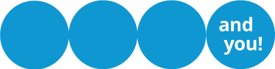

#ともに社会を変えよう
DVや暴力の被害にあっている インドのアッサム州の茶園労働者の女性達。 UN Womenの支援で、暴力を防止し、 協力する新しい方法を見つけました。
人身取引、ジェンダーに根差す暴力、 性的搾取と虐待、強制労働、教育の不平等など、 世界各地で、困難にある、女性と少女たち。
世界の女性と少女たちに希望の未来を届けたい。 UN Womenは、困難にある女性や少女のために、 社会に変化を起こしてきました。
この世界を 女性も、リーダーになれる、 女性も、経済的に自立できる、 女性への暴力がない、 機会が平等にある社会にするために 世界の女性とともに、 ジェンダー平等な社会を目指しませんか？
#ともに社会を変えよう
 シェアする
シェアする ツイートする
ツイートする